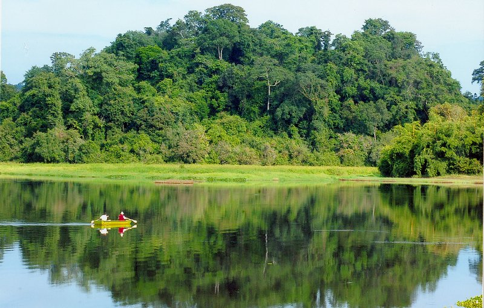
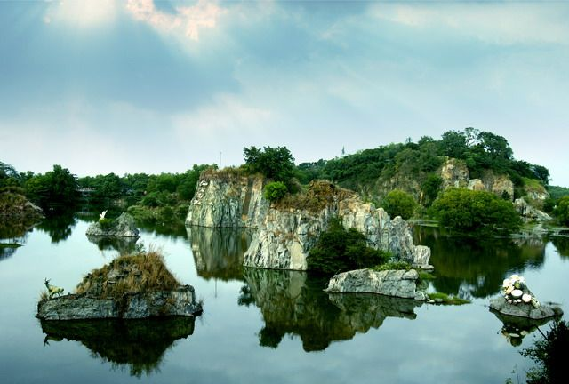
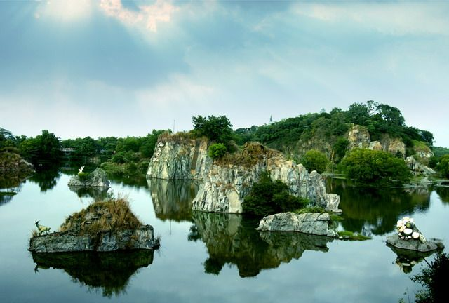

 

Toàn cảnh bên ngoài chùa
Chùa Bửu Phong được xây dựng từ thế kỷ XVII. Tài liệu của Bảo tàng tỉnh Đồng Nai cho biết Cổng tam quan chùa nằm dưới chân núi Bình Điện, bên đường Huỳnh Văn Nghệ. Trước đây, du khách viếng chùa đều phải leo lên 99 bậc đá, nay đã có đường lên đến sân chùa cho du khách đi xe máy. Mặt chính của chùa quay về hướng Đông Bắc, từ đây nhìn xuống sân bay Biên Hòa, Văn miếu Trấn Biên và những đồng ruộng. Bên trái có đá Thanh Long (còn gọi là Hàm Rồng), bên phải có hang Bạch Hổ và đài Tam thế Phật. Chùa gồm có các hạng mục: chánh điện, giảng đường và nơi thờ tổ. Trung tâm ngôi chánh điện thờ Phật Di Đà Tam Tôn, Đức Phật Thích Ca, Ngọc Hoàng thượng đế, Bồ Tát Văn Thù, Bồ Tát Phổ Hiền. Hai bên tả hữu thờ Quan Công và Tổ sư Đạt Ma. Ngoài ra còn có hương án thờ Bồ Tát Di Lặc, Bồ Tát Địa Tạng và bàn thờ Thập Điện Diêm Vương. Ngôi bảo tháp sau chánh điện thờ Xá Lợi Phật.